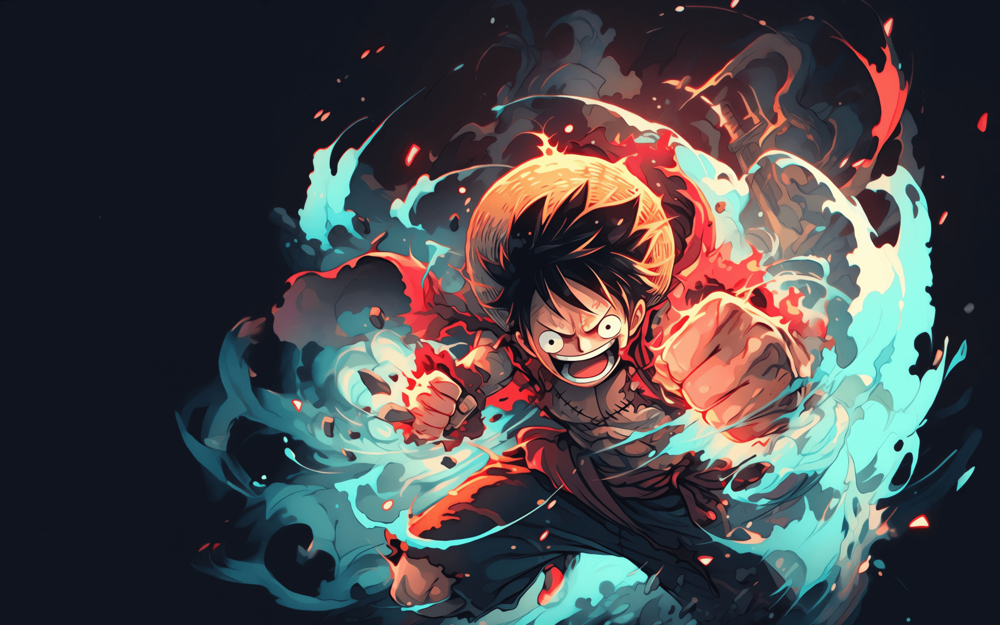
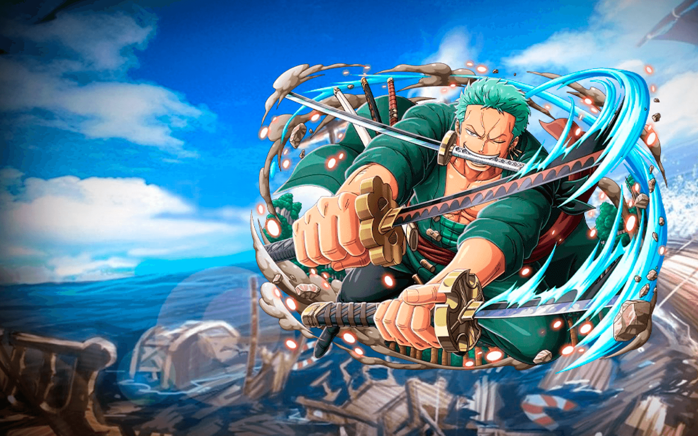

01 · CAPITÃO
01 · CAPITÃOMonkey D. Luffy
Visão, energia e coragem para começar.
Desenvolvedor Full Stack Júnior
Olá, eu sou
Construindo boas ideias, uma linha de cada vez.
Desenvolvedor em formação contínua, com interesse em criar experiências digitais funcionais, acessíveis e feitas para pessoas.


A TRIPULAÇÃO / CHAPÉUS DE PALHA
Uma homenagem à equipe que transforma curiosidade, confiança e colaboração em grandes jornadas.
01 · CAPITÃOVisão, energia e coragem para começar.
 02 · ESPADACHIM
02 · ESPADACHIMDisciplina para seguir firme até o objetivo.
 03 · NAVEGADORA
03 · NAVEGADORAEstratégia para encontrar o melhor caminho.
 04 · COZINHEIRO
04 · COZINHEIROCuidado com os detalhes e com quem está ao lado.
 05 · MÉDICO
05 · MÉDICOAprendizado constante para ajudar a equipe a evoluir.
Arte dos personagens: ONE PIECE.com · busca oficial de personagens
01 / SOBRE
Gosto de entender como cada parte de um produto se conecta — da interface ao servidor. Venho construindo minha experiência com projetos pessoais, estudos técnicos e prática constante.
Meu interesse passa por desenvolvimento web, APIs, bancos de dados e interfaces pensadas para diferentes telas. Quero escrever código claro, colaborar bem e criar soluções úteis.
02 / PROJETOS
Projeto atual · One Piece
Uma apresentação responsiva que combina identidade visual temática, navegação acessível e uma base opcional de métricas agregadas.
Ver repositórioVitrine digital
Projeto de loja online de tênis para explorar uma vitrine digital de produtos.
Ver repositórioInteresses & criatividade
Uma vitrine pessoal que reúne gostos, ideias e temas para experiências web.
Ver repositório03 / TECNOLOGIAS
Uma stack em evolução, aplicada neste portfólio e nos exemplos de integração do repositório.
API de métricas anônimas com persistência agregada em SQLite.
API do projetoLayout fluido, leitura confortável e navegação adaptável ao celular.
InterfaceCliente de exemplo para integração com a API de métricas.
Exemplo no repositórioCliente HTTP de exemplo, organizado como aplicação .NET.
Exemplo no repositórioMenu mobile acessível, navegação e gestão da escolha de métricas.
Interações da página04 / PRIVACIDADE
A API opcional registra somente contagens diárias agregadas de visualizações. Ela não grava nome, e-mail, IP, localização ou identificador de visitante. O envio só acontece depois do consentimento.
No GitHub Pages, a página é estática e a API Python não fica ativa. As métricas começam quando o backend for hospedado e configurado; a hospedagem pode manter seus próprios logs técnicos.
Como funciona a coleta05 / CONTATO
Estou aberto a conversas, oportunidades e novos desafios.